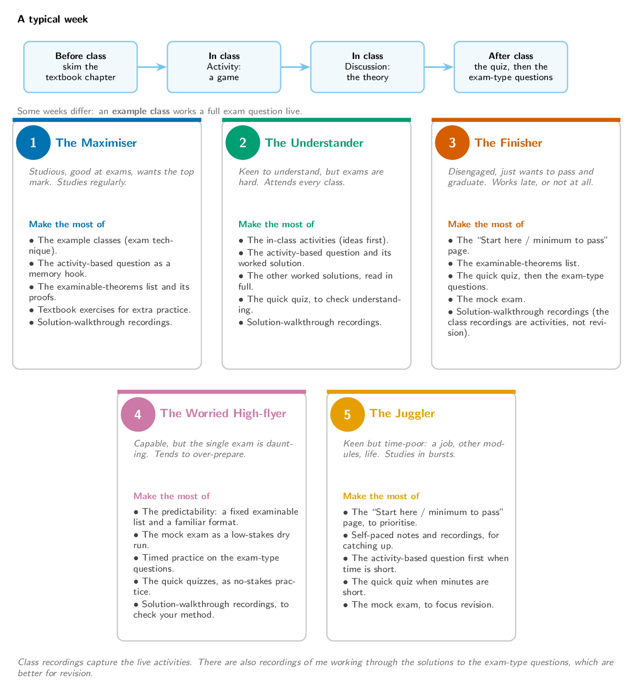

Whoever you are, this course is designed to be predictable. There is a single
two-hour exam worth 100% of the mark, a fixed
list of examinable theorems, and every topic on the
schedule carries worked, exam-type questions with full solutions. This page
is the quickest way in.
The five students below are caricatures, but most of us are a mix of them. Find
the one closest to you and follow the signposts.

The minimum to pass
If you do nothing else, do this, in order:
Read the Assessment page so you know the format: a single
two-hour exam, 100% of the mark.
For every topic on the schedule, start with the quick quiz to check
the basics, then attempt the exam-type questions (the activity-based one
first), and check the worked solutions.
Sit the mock exam and the example exam, both linked from the
Assessment page, under timed conditions. We work through the
mock together in class.
For anything you got stuck on, watch the solution-walkthrough recording.
That is the whole target. It is finite, and it does not change much from year to
year.
If you are aiming for the top mark
Going beyond the minimum:
Treat the example classes as the most valuable hour of the week: that is
where we build a full-mark answer live.
Use the activity-based question on each topic page as a memory hook; the
game you played is meant to pull the method back.
Learn the examinable proofs properly. Each entry on the
Assessment page links straight to the proof in the textbook.
Work the textbook exercises for each chapter, which give more practice with
solutions well beyond the questions here.
If exams are hard for you
The activities are there to make each idea click before any algebra. To turn
that understanding into marks:
Use each topic's quick quiz to confirm the basics have stuck before the
harder questions; it reshuffles, so there is no harm in repeating it.
A topic's questions are easier while the activity is still fresh, so it can
help to revisit a topic before too long; there is no need to rush.
Read the worked solutions in full: they are written as sentences so you can
follow the reasoning, not just the answer.
Lean on the solution-walkthrough recordings to see an answer built step by
step.
If the exam worries you
A single exam can feel daunting, so lean on how predictable it is:
The examinable content is a fixed list and the format does not change much from
year to year.
Treat the mock exam as a low-stakes dry run, and sit the example exam under
timed conditions to get used to the clock.
Use the solution-walkthrough recordings to check your method against a full
answer.
If you are short on time
If you are juggling the course with everything else:
Use the minimum-to-pass list above to prioritise, and the recordings to catch
up on any class you miss.
The quick quiz on each topic is the fastest way to test yourself when you
only have a few minutes.
When time is short, do the activity-based question first: it is the quickest
way back into a topic.
Focus your revision on the mock exam and the examinable-theorems list.
A note on recordings
The class recordings capture the live activities, which are good for being in the
room but less useful for last-minute revision. There are also recordings of me
working through the solutions to the exam-type questions; if you are catching up
late, those are the recordings to watch.